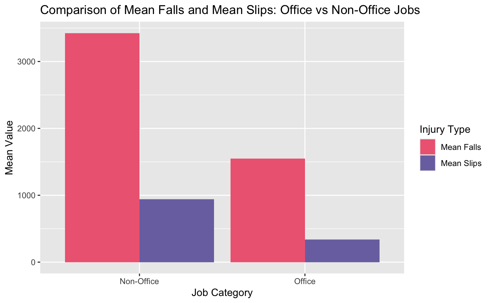
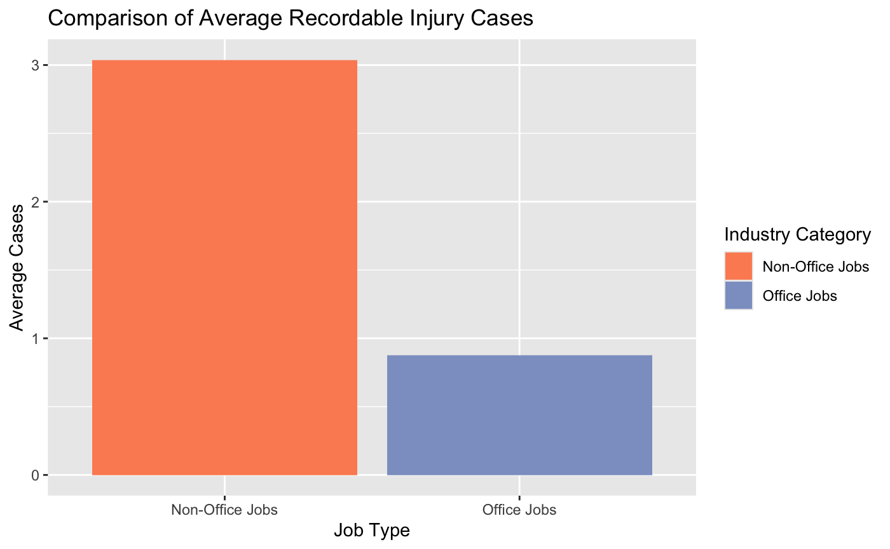
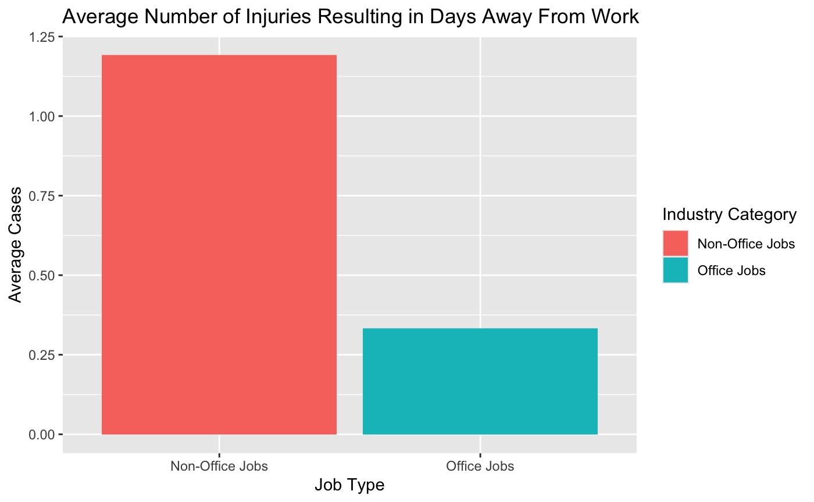

4.1 Primary Findings
4.1.1 Mean Slips and Falls
To reiterate, this dataset only records incidents that result in days away from work or job restriction, which I am generalizing to mean the incidents resulted in injury.
In 2023, the mean number of falls in non-office industries was 1546, and the mean for office industries was 3426. The mean number of slips in non-office industries was 941, and the mean was 340 for office industries (Figure 1). Non-office had, on average, about 2.2 times the number of falls and about 2.8 times more slips. This contradicts the previous claim of office workers being 2 to 2.5 times more likely than non-office workers to suffer an injury from a fall. According to these results, the reverse of the claim is more supported.
Figure 1: The mean number of slips and falls for both non-office and office industries. The mean number of falls/slips can also be interpreted as the mean number of injuries resulting from a workplace fall/slip.
First, the data was tested for non-constant variance since the two groups have unequal sample sizes. Although visual inspection is not a fail-safe way to check for constant variance, the conclusion met is that both the groups created from this dataset have non-constant variance, and the Welch t-test will be used to account for this at a significance level of 0.05.
The t-test for fall-related cases revealed a significant p-value of 0.016 and a confidence interval of (-3416, -344). This is enough evidence to conclude there is a significant difference in the number of recordable falls between office and non-office injuries.
The same t-test was run for slip-related cases and resulted in a significant p-value of 0.0013 with a confidence interval of (-956, -245). This is enough evidence to conclude there is a significant difference in the number of recordable slips between office and non-office injuries.
4.1.2 Total Recordable Injury Cases
Non-office industries experienced an average rate of 3.04 workplace injuries per 100 workers in 2023, and office industries experienced an average of 0.88 workplace injuries within in the same data. On average, non-office jobs reported was about 3.5 times the rate of total recordable cases compared to office jobs (Figure 3).
Figure 3: Average number of recordable injuries in both non-office and office industries in 2023
After running a Welch two-sample t-test to account of non-constant variance, a significant p-value of 9.418x10-7 was revealed. The confidence level was (-2.85, -1.48). We can conclude a significant difference between the average number of injuries per 100 workers for non-office and office industries.
4.1.3 Injury Severity (Cases with Days Away from Work)
Non-office jobs also had a greater proportion of injuries resulting in time away from work. For non-office industries, the average rate of injuries per 100 workers resulting in days away from work was 1.19. For office industries, the average was 0.33. Similarly to the total number of cases, the average for non-office industries was about 3.6 times larger than that of the office industries (Figure 4). This can be used to make inference on the average severity of the injuries that non-office workers and office workers are acquiring.

Figure 4: Average rate of 2023 recordable injuries per 100 workers that resulted in days away from work in both non-office and office industries
The same t-test was used due to the non-constant variance, and the resulting significant p-value was 1.88x10-5 with a confidence interval was (-1.21, -0.51). We can conclude there is a significant difference between the average rate per 100 workers of injuries that resulted in time away from work.